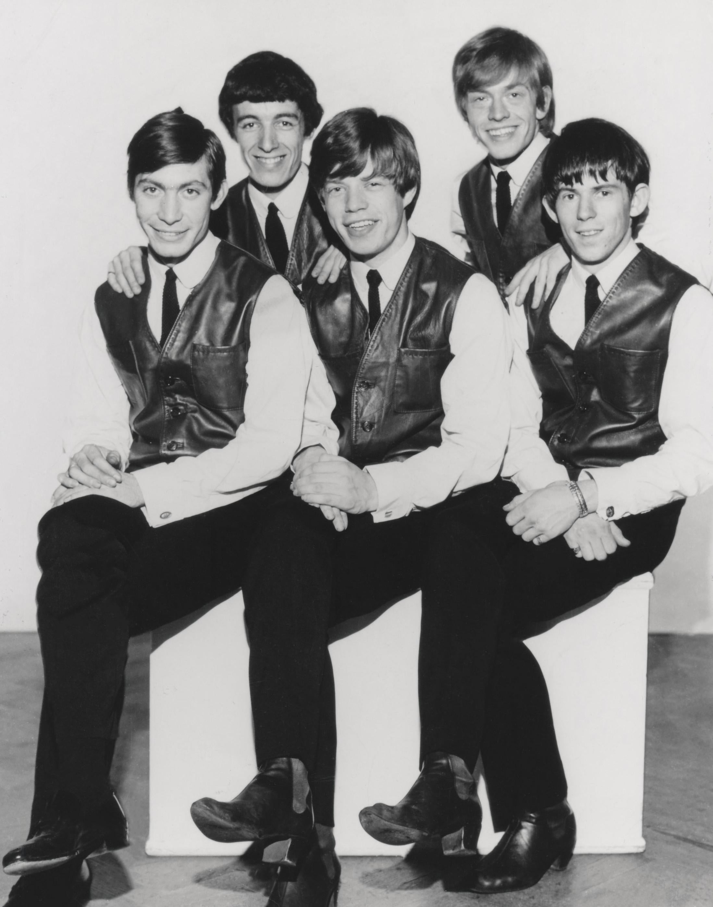

"(I Can't Get No) Satisfaction" is the riff that turned The Rolling Stones into chart-toppers.
Keith Richards wrote it half asleep in a Florida motel room.
He almost didn't want it released at all.

Table of Contents
- How Keith Richards Wrote the Riff in His Sleep
- Recording It at Chess and RCA
- A Number One Too Risque for UK Radio
- FAQ
How Keith Richards Wrote the Riff in His Sleep
Keith Richards woke up in the middle of the night on May 7, 1965.
He was staying at the Gulf Motel in Clearwater, Florida, on tour.
A Cassette Recorder and a Riff, Then Back to Sleep
Richards grabbed a cassette recorder by his bed and played the riff that had just come to him.
He mumbled the words "I can't get no satisfaction" onto the tape.
Then he fell straight back asleep, and forgot he'd done any of it until the tape turned up the next day.
Mick Jagger Finished the Words by the Pool
Mick Jagger wrote the rest of the lyrics the next day, sitting by the motel pool in the same Florida sun.
Between Richards's riff and title line and Jagger's verses, the song came together in barely 24 hours.
Recording It at Chess and RCA
The Rolling Stones started recording the song at Chess Studios in Chicago on May 10, 1965.
They finished it two days later during an 18-hour session at RCA Studios in Los Angeles.
The Fuzz Box That Was Only Supposed to Be Temporary
Richards ran his guitar through a new Gibson Maestro Fuzz-Tone pedal to sketch out the riff.
He meant the distorted sound as a placeholder, something a horn section would replace later.
The band ended up keeping the fuzz-guitar version instead.
Richards and Jagger both had doubts about releasing it as a single at all.
They thought the track still sounded unfinished next to the polished pop records topping the charts.
A Number One Too Risque for UK Radio
The single became The Rolling Stones' first US number one, holding the top spot on the Billboard Hot 100 for four weeks that summer.
The UK release came in August 1965, and it gave the band their fourth UK number one.
Mainstream British radio was slower to embrace it.
The line about "trying to make some girl" struck programmers as too suggestive for daytime airplay.
For a stretch, the song got more airtime on unlicensed pirate radio stations than on the BBC.
FAQ
Who wrote it?
Keith Richards came up with the riff and title line in his sleep on May 7, 1965, at a Florida motel.
Mick Jagger wrote the rest of the lyrics poolside the next day.
Why does the song have a fuzzy guitar riff?
Richards played the riff through a new Gibson Maestro Fuzz-Tone pedal.
He meant it as a placeholder for horns, but the band kept the fuzz sound in the final mix.
Was the song banned from radio?
In the UK, mainstream stations avoided it over the line about trying to make some girl.
It was mostly heard on pirate radio at first.
How did it perform on the charts?
It became The Rolling Stones' first US number one, holding the top spot for four weeks in the summer of 1965.
It was their fourth UK number one that August.
The riff Keith Richards almost forgot became the sound that defined The Rolling Stones for the rest of the decade.
It's a cornerstone of the British Invasion & Beat Music movement that carried the band to America.
Back to the 1960smusic.net homepage to explore every genre of the decade, starting with "(I Can't Get No) Satisfaction" itself.